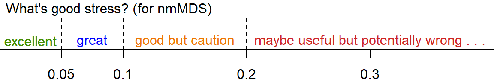
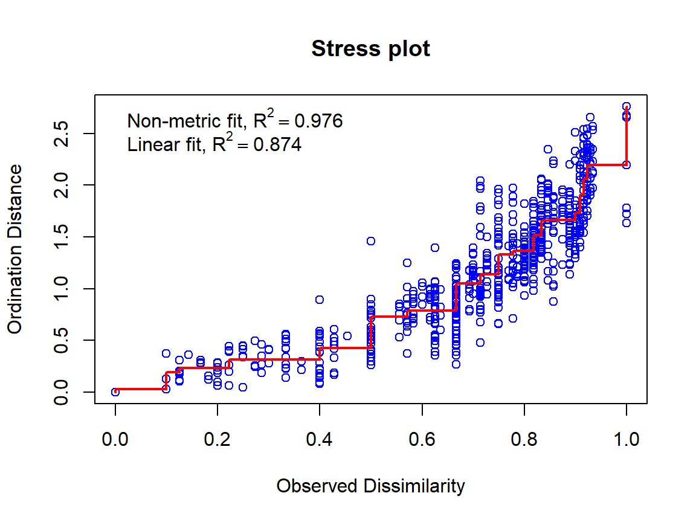

eDNA Data Analysis Workshop 2023
Learning Outcomes:
- Students are able to appropriately analyse data from an eDNA field sampling campaign;
- Students are able to interpret and understand statistical outputs from the R package vegan.
library(vegan)
library(flextable)
library(stringr)
library(magrittr) # for pipe syntax
set_flextable_defaults(theme_fun = "theme_vader", font.size = 9)Import the data
Notes:
- This code imports the data from a file where the samples are rows and the species are columns.
- We convert the column Site to a factor (categorical information in R)
eDNA2022 <- read.csv(file = "eDNA2022.csv")
eDNA2022$Site <- as.factor(eDNA2022$Site)If you have species as rows and samples as columns, we will need to do a bit of wrangling!
speciesAsRows <- read.csv(file = "speciesAsRows.csv", row.names = 1)
speciesAsRows <- rbind(str_remove(colnames(speciesAsRows), "X"),
speciesAsRows)
row.names(speciesAsRows)[1] <- "SiteID"
speciesAsRows <- as.matrix(speciesAsRows) # convert to matrix for next step
speciesAsRows <- t(speciesAsRows) # t() means transpose
eDNA2022 <- as.data.frame(speciesAsRows)
eDNA2022$Site <- as.factor(eDNA2022$Site)List of all the species and their common names
altnames <-
c("MosqFish", "Goby", "Mullet", "Bream", "BnjoFrog", "GToadlet", "MlrdDuck",
"SpotDove", "SwampHen", "Crake", "WFHeron", "Lorikeet", "Cattle", "Sheep",
"Mouse", "Rat", "HydroidB", "HydroidO", "BwnJelly", "MoonJely", "Dog")
names_table <-
data.frame(Taxonomic = gsub("."," ",colnames(eDNA2022[,4:24]), fixed = T),
Common=c("Mosquito Fish","Bridled Goby","Gray Mullet","Black Bream",
"Western Banjo Frog", "Gunther's Toadlet", "Mallard Duck",
"Spotted Turtle Dove", "Purple Swamphen", "Spotted Crake",
"White Faced Heron", "Rainbow Lorikeet", "Cattle", "Sheep",
"Mouse", "Rat", "HydroidB", "HydroidO", "Brown Jellyfish",
"Moon Jellyfish", "Domestic Dog"),
Abbreviated=altnames)
flextable(names_table,cwidth = c(3,2,2))Taxonomic | Common | Abbreviated |
Gambusia holbrooki | Mosquito Fish | MosqFish |
Arenigobius bifrenatus | Bridled Goby | Goby |
Mugil cephalus | Gray Mullet | Mullet |
Acanthopagrus butcheri | Black Bream | Bream |
Limnodynastes dorsalis | Western Banjo Frog | BnjoFrog |
Pseudophryne guentheri | Gunther's Toadlet | GToadlet |
Anas platyrhynchos | Mallard Duck | MlrdDuck |
Spilopelia chinensis | Spotted Turtle Dove | SpotDove |
Porphyrio porphyrio | Purple Swamphen | SwampHen |
Porzana tabuensis | Spotted Crake | Crake |
Egretta novaehollandiae | White Faced Heron | WFHeron |
Trichoglossus rubritorquis | Rainbow Lorikeet | Lorikeet |
Bos taurus | Cattle | Cattle |
Ovis sp | Sheep | Sheep |
Mus musculus | Mouse | Mouse |
Rattus sp | Rat | Rat |
Blackfordia polytentaculata | HydroidB | HydroidB |
Obelia bidentata | HydroidO | HydroidO |
Phyllorhiza punctata | Brown Jellyfish | BwnJelly |
Aurelia sp | Moon Jellyfish | MoonJely |
Canis lupus familiaris | Domestic Dog | Dog |
We need to make a subset of our imported data which contains just the species presence/absence information (not sample IDs, sites, reps). We also overwrite the original column names with abbreviated names for better visualisation later.
allSpecies <- eDNA2022[,4:24] # not columns 1:3 which are sample IDs etc.
colnames(allSpecies) <- names_table[,3]Difference and Similarity measures
We start by assessing how similar or different our samples are – to do this we need to set up a resemblance matrix. Ideally our 4 replicated samples are more similar to one another than any other samples – but with field sampling this is not always the case. To determine similarity we need to use a similarity measure.
Similarity Measures:
A similarity measure is conventionally defined to take values between 0 and 100% (or 0 and 1) with the ends of the range representing the extreme possibilities:
- Similarity = 100% (or 1) if two samples are totally similar
- Similarity = 0 if two samples are totally dissimilar
What constitutes total similarity, and particularly total dissimilarity, of two samples depends on the specific criteria that are adopted. For example most biologists would feel that similarity should equal zero when two samples have no species in common, and similarity should equal 100% if two samples have identical entries. Similarities are calculated between every pair of samples creating a similarity matrix. There are a number of similarity measures (ways to calculate similarity) which can be used to create this matrix.
Bray Curtis and Jaccard are two different similarity measures we can use -– both are commonly used in ecology and have desirable properties -– similarity is calculated based on the taxa that samples have in common. Similarity takes a value of 0 if two samples have no species in common and joint absences have no effect (i.e. a taxon jointly absent in two samples does not contribute to its similarity). The difference between them is that Bray Curtis will use abundance information (where it is present) in assessing similarity, whereas Jaccard converts abundances to binary (i.e. 0s and 1s, with 1 representing presence and 0 meaning absence) to assess similarity. In our case it does not matter much which we use, since we have already converted to binary – so let’s proceed with Jaccard.
Ecological Question – If two samples have no taxa present each does this make them more similar to one another?
To assess similarity in the vegan R package carry out the following steps. The output shows the first few rows and columns of the dissimilarity matrix; each number represents the Jaccard distance between samples based on the presence or absence of species.
AF_diss_all <- vegdist(allSpecies,
distance = "jaccard") # default is distance = "bray"
# just look at the top corner of the dissimilarity matrix:
txt0 <- capture.output(print(AF_diss_all, digits=3)); txt0[1:10]; rm(txt0)## 1 2 3 4 5 6 7 8 9 10 11
## 2 0.0769
## 3 0.2727 0.1667
## 4 0.0769 0.0000 0.1667
## 5 0.3333 0.3846 0.6364 0.3846
## 6 0.3333 0.3846 0.6364 0.3846 0.0000
## 7 0.3333 0.3846 0.6364 0.3846 0.0000 0.0000
## 8 0.2727 0.3333 0.6000 0.3333 0.0909 0.0909 0.0909
## 9 0.8000 0.6364 0.5556 0.6364 0.6000 0.6000 0.6000 0.7778
## 10 0.6000 0.6364 0.5556 0.6364 0.6000 0.6000 0.6000 0.7778 0.2500
## 11 0.8000 0.6364 0.5556 0.6364 0.8000 0.8000 0.8000 1.0000 0.2500 0.2500Ordinations
Next we will construct our ordination – a procedure to visualise the similarity matrix by simplifying (scaling) it into fewer dimensions than our original data. This reduction of dimensions is useful as the original data will have as many dimensions as there are species, which is impossible to visualise! There are two different types of ordination that we will use: Multi-Dimensional-Scaling (nmMDS) and Principal Coordinates Analysis (PCO). If you have previously used PCA -– Principal Component Analysis – you may be familiar with ordination methods. PCA is useful for environmental datasets -– these are represented by a similarity matrix derived via use of Euclidean Distance as a measure of similarity. PCA is more suited to environmental variables because of the type of data – there are no large blocks of zeros (usually) and it is no longer necessary to select a similarity measure that ignores joint absences. When looking at ordination plots in general you should note that sample points that are spatially located together share common characteristics and sample points that are distantly located from one another share less characteristics. This holds whether we are working with environmental variables (pH, EC, moisture content, heavy metals etc.) or species abundances.
The main difference between MDS and PCO relates to the underlying use of the resemblance matrix.
MDS takes the similarity measures calculated by Jaccard or Bray Curtis and ranks them in order. Thus pairs are samples are ranked according to highest to lowest similarity and are thus plotted in multidimensional space. Since it uses the rank and not the actual values, it’s commonly called “non-[para]metric” multi-dimensional scaling, or nmMDS.
PCO takes the actual values of the underlying measure of similarity and plots pairs of samples in multi-dimensional space. It will then look for the direction (vector) of greatest variance in the multi-dimensional “cloud” of points, which becomes the first PCO dimension. Successive dimensions explain the most possible remaining variance, until all variance is accounted for. So, many PCO dimensions are possible, but usually only the first 2 or 3 are useful for visualizing our data.
For both types of ordinations the software attempts to preserve the similarity of each pair of samples –- while this is feasible in multidimensional space, in order for us to view the ordination we see this in 2 or 3 dimensions -– thus the software attempts to preserve as much as is feasible of the sample pair similarity as calculated –- but in reality we need to consider how much the 2- dimensional view is a true representation of the data set. In nmMDS we use the stress value to evaluate this, in PCO we can plot multiple axes, i.e. axis 1 vs. axis 2, axis 2 vs. axis 3 and so on. The amount of variance explained in each PCO dimension is called the eigenvalue, and the output will include these values; the greater the eigenvalue, the more useful a PCO dimension is. In practice, much of the variability is often explained in the first two axes (i.e. 2 dimensions) and we will limit our analysis to these axes for this dataset.
Non-metric multidimensional scaling (nmMDS)
In vegan this is done using the metaMDS() function. We need to specify an input matrix of just the species data (e.g. allSpecies which we made earlier). The default is to find 2 dimensions (k) using a Bray-Curtis dissimilarity matrix, but we can set these options to different values using k = and distance = options. The dissimilarity matrix is calculated within the metaMDS() function, so for consistency we set distance = “jaccard”.
# default with 2 dimensions
AF_nmds_all <- metaMDS(allSpecies, distance = "jaccard")
# 3 dimensions for comparison
AF_nmds_all3 <- metaMDS(allSpecies, k=3, distance = "jaccard")# show output for 2 nmMDS dimensions
AF_nmds_all##
## Call:
## metaMDS(comm = allSpecies, distance = "jaccard")
##
## global Multidimensional Scaling using monoMDS
##
## Data: allSpecies
## Distance: jaccard
##
## Dimensions: 2
## Stress: 0.1554552
## Stress type 1, weak ties
## Two convergent solutions found after 20 tries
## Scaling: centring, PC rotation, halfchange scaling
## Species: expanded scores based on 'allSpecies'The 2D stress value is \(\approx\) 0.16. This can be interpreted as follows:

The stress value is relatively high as we are dealing with a large number of samples with lots of 1s and 0s in a 2 dimensional space – resulting in a challenging similarity environment.
\(\Rightarrow\) Check the stress value of the 3-D ordination – is it lower? Remember that we made this object in the code block above:
AF_nmds_all3The following plot mimics the nmmds plot in Deirdre’s handout (note that the sign of dimension MDS2 is reversed)
palette(c("black","grey60","grey42",
rainbow(4,v=0.75,end=0.25),rainbow(4,v=0.75,start=0.45,end=0.8)))
plot(AF_nmds_all$points, pch=c(rep(21:25, 2),21)[eDNA2022$Site],
xlim = c(-1.6,2.2), ylim = c(1.2,-1.2),
bg=seq(1,11)[eDNA2022$Site],
cex = 1.4, main = "All species", col.main = "steelblue")
text(AF_nmds_all$points, labels=eDNA2022$SiteID, cex=0.9, pos = 4,
col=c("black","grey40","grey70",
rainbow(4,v=0.75,end=0.25),
rainbow(4,v=0.75,start=0.45,end=0.8))[eDNA2022$Site])
text(AF_nmds_all, display = "species", col = "#80008080", font=3, cex = 1.1)
legend("bottomright", inset = 0.01, box.col = 3, ncol = 4, title = "Site",
legend = seq(1,11), pch=c(rep(21:25, 2),21),
pt.bg = seq(1,11), pt.cex = 1.4, cex = 1.2)
You can play around with the code to make additional changes – you won’t break it by trying so play around as much as you like. You will notice that there are only 2 points for Site 2 – this is because the points are overlaid on top of one another – as we are picking up only a few taxa some of the samples are very similar to one another. However we can generally see that there are sample groupings and that likely location has an effect (i.e. samples that are from the same location are closer together). We will test this statistically a little later.
Principal Coordinates Analysis
In the ‘vegan’ package we use Weighted classical multidimensional scaling, also known as Weighted Principal Coordinates Analysis. This is implemented using the function wcmdscale().
AF_pco_all <- wcmdscale(vegdist(allSpecies), eig=TRUE)
AF_pco_all## Call: wcmdscale(d = vegdist(allSpecies), eig = TRUE)
##
## Inertia Rank
## Total 8.169
## Real 10.272 15
## Imaginary -2.103 21
##
## Results have 44 points, 15 axes
##
## Eigenvalues:
## [1] 3.377 2.101 1.537 1.297 0.613 0.434 0.342 0.214 0.158 0.100
## [11] 0.039 0.032 0.014 0.010 0.004 -0.006 -0.007 -0.009 -0.016 -0.021
## [21] -0.027 -0.035 -0.046 -0.052 -0.059 -0.074 -0.089 -0.094 -0.115 -0.134
## [31] -0.143 -0.163 -0.190 -0.212 -0.242 -0.371
##
## Weights: Constantplot(AF_pco_all)
This is a basic PCO plot based on all species, showing the locations of individual samples by row number.
We can make more informative plots by using the information stored in the output object (AF_pco_all).
palette(c("black","grey60","grey42",
rainbow(4,v=0.75,end=0.25),rainbow(4,v=0.75,start=0.45,end=0.8)))
par(mfrow = c(1,2), mar = c(4,4,1,1), mgp = c(1.7,0.3,0), tcl = 0.25,
font.lab = 2)
plot(AF_pco_all$points[,c(1,2)], xlim = c(0.4,-0.6), ylim = c(0.4,-0.6),
pch=3, cex = 0.5, col = "grey")
text(AF_pco_all$points[,c(1,2)],labels = eDNA2022$SiteID,
col=seq(1,11)[eDNA2022$Site])
mtext("first and second dimensions")
plot(AF_pco_all$points[,c(1,3)], xlim = c(0.4,-0.6), ylim = c(0.4,-0.6),
pch=4, cex = 0.5, col = "grey")
text(AF_pco_all$points[,c(1,3)],labels = eDNA2022$SiteID,
col=seq(1,11)[eDNA2022$Site])
mtext("first and third dimensions")
AF_pco_scores <- scores(AF_pco_all)PERMANOVA
In order to test where location has a significant effect on the taxa at our field site we need to run an ANOVA – however as we have multiple species to test together we cannot run a basic ANOVA – we must run a multivariate permutational ANOVA or PERMANOVA.
PERMANOVA shares some resemblance to ANOVA where they both measure the sum-of-squares within and between groups, and make use of an F test to compare within-group to between-group variance. However, while ANOVA bases the significance of the result on assumption of normality, PERMANOVA draws tests for significance by comparing the actual F test result to that gained from random permutations of the objects between the groups. Moreover, whilst PERMANOVA tests for similarity based on a chosen distance measure, ANOVA tests for similarity of the group averages.
We could calculate a univariate measure of diversity (a Simpson or Shannon index, for example) and run an ANOVA on that univariate value. In doing so, however, we are reducing the complex dataset to a simplified version and losing discrete information in the process. Remember that ANOVA also has an underlying assumption of normality -– generally speaking, biological species data are not normally distributed and thus do not satisfy this assumption. This makes applying a permutational ANOVA a much better option. Before the advent of computational capacity a permutational ANOVA would have taken quite some time to run –- luckily now it only takes a matter of seconds to minutes depending on the complexity of the dataset.
In the vegan package, the adonis2() function implements Permutational Multivariate Analysis of Variance Using Distance Matrices (i.e. PERMANOVA).
We use a formula in the adonis2() function which expresses the community matrix (i.e. the columns of species presence or absence) as a function of a factor (in this case, Site).
AF_permanova_all <- adonis2(eDNA2022[,4:24] ~ Site, data = eDNA2022,
permutations = 9999)
AF_permanova_all## Permutation test for adonis under reduced model
## Terms added sequentially (first to last)
## Permutation: free
## Number of permutations: 9999
##
## adonis2(formula = eDNA2022[, 4:24] ~ Site, data = eDNA2022, permutations = 9999)
## Df SumOfSqs R2 F Pr(>F)
## Site 10 7.7475 0.94839 60.644 1e-04 ***
## Residual 33 0.4216 0.05161
## Total 43 8.1691 1.00000
## ---
## Signif. codes: 0 '***' 0.001 '**' 0.01 '*' 0.05 '.' 0.1 ' ' 1P value by permutation = 0.0001 indicating a significant effect of location on the community composition of our samples. Note that 9999 permutations were undertaken to arrive at this value.
The output from the pairwise.adonis2() function is quite lengthy (to see it, run print(AF_PWpermanova_all)). We can tidy it up for clarity with a custom function (plainPW() – see below).
source("https://github.com/Ratey-AtUWA/eDNA/raw/master/FUN_pairwise_adonis2.R")
source("https://github.com/Ratey-AtUWA/eDNA/raw/master/FUN_plain_pairwise.R")
AF_PWpermanova_all <- pairwise.adonis2(eDNA2022[,4:24] ~ Site, data = eDNA2022)
AF_plainPW_all <- plainPW(AF_PWpermanova_all)
colnames(AF_plainPW_all)[1] <- "Comparison.between.Sites"
flextable(AF_plainPW_all, cwidth = c(1.5,1)) %>% align(align="center")Comparison.between.Sites | P_value |
1_vs_2 | 0.024 |
1_vs_3 | 0.032 |
1_vs_4 | 0.029 |
1_vs_5 | 0.031 |
1_vs_6 | 0.030 |
1_vs_7 | 0.031 |
1_vs_8 | 0.026 |
1_vs_9 | 0.033 |
1_vs_10 | 0.038 |
1_vs_11 | 0.026 |
2_vs_3 | 0.027 |
2_vs_4 | 0.037 |
2_vs_5 | 0.028 |
2_vs_6 | 0.022 |
2_vs_7 | 0.040 |
2_vs_8 | 0.033 |
2_vs_9 | 0.027 |
2_vs_10 | 0.029 |
2_vs_11 | 0.020 |
3_vs_4 | 0.035 |
3_vs_5 | 0.021 |
3_vs_6 | 0.036 |
3_vs_7 | 0.034 |
3_vs_8 | 0.034 |
3_vs_9 | 0.027 |
3_vs_10 | 0.032 |
3_vs_11 | 0.030 |
4_vs_5 | 0.035 |
4_vs_6 | 0.027 |
4_vs_7 | 0.036 |
4_vs_8 | 0.042 |
4_vs_9 | 0.032 |
4_vs_10 | 0.029 |
4_vs_11 | 0.036 |
5_vs_6 | 0.033 |
5_vs_7 | 0.039 |
5_vs_8 | 0.031 |
5_vs_9 | 0.028 |
5_vs_10 | 0.029 |
5_vs_11 | 0.035 |
6_vs_7 | 0.030 |
6_vs_8 | 0.037 |
6_vs_9 | 0.028 |
6_vs_10 | 0.065 |
6_vs_11 | 0.027 |
7_vs_8 | 0.040 |
7_vs_9 | 0.026 |
7_vs_10 | 0.031 |
7_vs_11 | 0.021 |
8_vs_9 | 0.025 |
8_vs_10 | 0.033 |
8_vs_11 | 0.023 |
9_vs_10 | 0.031 |
9_vs_11 | 0.030 |
10_vs_11 | 0.032 |
Notes:
- the pairwise Adonis2 source code is by Pedro Martinez Arbizu at github.com/pmartinezarbizu/pairwiseAdonis.
- The code for the plainPW() function is as follows:
# function inputs output object from Pedro Martinez Arbizu's pairwise.adonis2()
# code at https://github.com/pmartinezarbizu/pairwiseAdonis
plainPW <- function(PWobj) {
UL_PW_perm <- unlist(PWobj) # convert list to long named vector
names_PW_perm <- names(UL_PW_perm) # extract the names...
rows_pvals <- grep("F)1",names_PW_perm) # find the rows we need
justThePW <- # use the row indices to find the rows in the long vector
data.frame(Comparison = str_remove(names(UL_PW_perm[rows_pvals]),
fixed(".Pr(>F)1")),
P_value = as.numeric(UL_PW_perm[rows_pvals]))
return(justThePW) # and the resulting data frame is the output!
}You can also get the plainPW() function code at github.com/Ratey-AtUWA/…/FUN_plain_pairwise.R.
Extras
Stress plot for nmMDS based on Jaccard dissimilarities, all species
stressplot(AF_nmds_all, main="Stress plot")
Analysis with just the aquatic species
These are: Gambusia holbrooki, Arenigobius bifrenatus, Mugil cephalus, Acanthopagrus butcheri, Limnodynastes dorsalis, Pseudophryne guentheri, Blackfordia polytentaculata, Obelia bidentata, Phyllorhiza punctata, Aurelia sp.
fish <- allSpecies[,c(1:6,17:20)]
head(fish)## MosqFish Goby Mullet Bream BnjoFrog GToadlet HydroidB HydroidO BwnJelly
## 1 1 0 0 0 1 0 0 0 0
## 2 1 0 0 0 1 1 0 0 0
## 3 1 0 0 0 0 1 0 0 0
## 4 1 0 0 0 1 1 0 0 0
## 5 1 0 0 0 1 0 0 0 0
## 6 1 0 0 0 1 0 0 0 0
## MoonJely
## 1 0
## 2 0
## 3 0
## 4 0
## 5 0
## 6 0for interest look at the dissimilarity matrix
AF_diss_aquat <- vegdist(fish,
distance = "bray")
txt0 <- capture.output(print(AF_diss_aquat,digits=3));txt0[1:10];rm(txt0)## 1 2 3 4 5 6 7 8 9 10 11
## 2 0.2000
## 3 0.5000 0.2000
## 4 0.2000 0.0000 0.2000
## 5 0.0000 0.2000 0.5000 0.2000
## 6 0.0000 0.2000 0.5000 0.2000 0.0000
## 7 0.0000 0.2000 0.5000 0.2000 0.0000 0.0000
## 8 0.0000 0.2000 0.5000 0.2000 0.0000 0.0000 0.0000
## 9 0.5000 0.2000 0.0000 0.2000 0.5000 0.5000 0.5000 0.5000
## 10 0.3333 0.5000 0.3333 0.5000 0.3333 0.3333 0.3333 0.3333 0.3333
## 11 1.0000 0.5000 0.3333 0.5000 1.0000 1.0000 1.0000 1.0000 0.3333 1.0000AF_nmds_aquat <- metaMDS(fish, trymax = 500,
distance = "jaccard")AF_nmds_aquat##
## Call:
## metaMDS(comm = fish, distance = "jaccard", trymax = 500)
##
## global Multidimensional Scaling using monoMDS
##
## Data: fish
## Distance: jaccard
##
## Dimensions: 2
## Stress: 0.08664753
## Stress type 1, weak ties
## Two convergent solutions found after 27 tries
## Scaling: centring, PC rotation, halfchange scaling
## Species: expanded scores based on 'fish'plot(AF_nmds_aquat, type="p",display = "sites", cex = 1.2)
text(AF_nmds_aquat, display = "species", col = "dodgerblue", cex = 0.8)
alternative to vegan plots
palette(c("black","grey80","grey92",
rainbow(4,s=0.5,end=0.25),rainbow(4,s=0.5,start=0.45,end=0.8)))
plot(AF_nmds_aquat$points, pch=c(rep(21:25, 2),21)[eDNA2022$Site],
xlim = c(-1.2,1.8),
bg = seq(1,11)[eDNA2022$Site],
cex = 1.4, col.main = "steelblue", main = "Just aquatic species")
text(AF_nmds_aquat$points, pos = rep(c(1,2,4),4)[eDNA2022$Site],
labels=eDNA2022$SiteID, cex=1,
col=c("black","grey40","grey70",
rainbow(4,v=0.75,end=0.25),
rainbow(4,v=0.75,start=0.45,end=0.8))[eDNA2022$Site])
text(AF_nmds_aquat, display = "species", col = "grey33", font=3, cex = 0.9)
Detrended correspondence analysis - all species
AF_dca_all <- decorana(allSpecies)
AF_dca_all##
## Call:
## decorana(veg = allSpecies)
##
## Detrended correspondence analysis with 26 segments.
## Rescaling of axes with 4 iterations.
##
## DCA1 DCA2 DCA3 DCA4
## Eigenvalues 0.5537 0.3602 0.2545 0.17011
## Decorana values 0.5632 0.3154 0.1915 0.07493
## Axis lengths 3.2842 2.6926 2.1577 1.75539plot(AF_dca_all)
For comparison if wanted: nmMDS again with Bray-Curtis distances
AF_nmds_all_B <- metaMDS(allSpecies) # uses Bray by defaultAF_nmds_all_B##
## Call:
## metaMDS(comm = allSpecies)
##
## global Multidimensional Scaling using monoMDS
##
## Data: allSpecies
## Distance: bray
##
## Dimensions: 2
## Stress: 0.1554552
## Stress type 1, weak ties
## Two convergent solutions found after 20 tries
## Scaling: centring, PC rotation, halfchange scaling
## Species: expanded scores based on 'allSpecies'The results should be identical to nmMDS with Jaccard, since the community matrix is already converted to presence-absence (binary ones and zeros).
Created with rmarkdown in RStudio using the cyborg theme from Bootswatch via the bslib package.